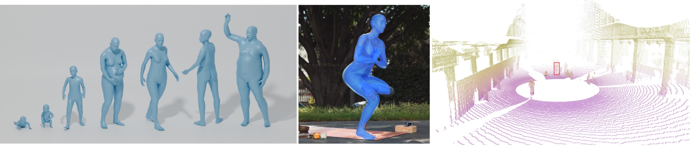

3D Human Mesh Modeling and Recovery from RGB and LiDAR
General Information
In this half-day tutorial, we will provide a general overview of the state of the art in human mesh modeling and recovery. We will begin with an introduction to parametric human body mesh models covering their motivation, design choices and trade-offs. We will then move to an overview of 3D Human Mesh Recovery (HMR) from RGB data, before moving on to HMR from depth data, with a particular focus on challenging in-the-wild conditions and LiDAR data.
- Date: to be confirmed (2026, June 3 - 4)
- Format: half-day tutorial. Recordings will be made available online.
- Target audience: academic and industrial researchers of all levels. We will introduce foundational concepts and will step-by-step build toward more advanced topics throughout the presentations.
- Subject areas: Humans; Face, body, pose, gesture, movement (primary), 3D from single images, 3D from multi-view and sensors, Robot perception, Autonomous driving.
Motivation
The understanding of human pose and shape is the cornerstone of multiple AI applications ranging from monitoring, AR/VR, sport and posture analysis, human-robot interaction all the way to autonomous driving. Accurate human perception enables digital systems to interact appropriately with people in both indoor and outdoor environments.
Recent advances have pushed the field forward: modern methods now begin to achieve strong in-the-wild Human Mesh Recovery (HMR) performance, making them more reliable and useful for a wide variety of downstream tasks. With this growing interest, the community has seen the emergence of datasets and shape-recovery models, as well as an expanding range of input modalities; including RGB, depth, LiDAR, etc. At the same time, multiple human body models are being developed, each offering different levels of detail, interpretability and expressivity.
While these developments open up exciting new opportunities, they also introduce new challenges. Designing and deploying human mesh recovery systems remains difficult due to dependency on the chosen body model, peculiarities of single-person and multi-person settings, challenges of occlusions and interactions with the 3D scene, and the reliance on data-hungry training pipelines.
This tutorial is therefore motivated by the need for a clear, structured, and accessible overview of the current HMR landscape. The increasing use of foundation models and large-scale pretrained systems makes it particularly timely to disseminate a clear picture of the underlying principles of human body modeling and HMR, so that these methods can be more easily adopted, extended, and applied to adjacent fields beyond core human pose estimation. Our goal is to lower the entry barrier for newcomers, provide a unifying perspective for practitioners, and foster collaboration between communities working on human modeling, 3D vision, graphics, and embodied AI. By providing access to these concepts, we aim to maximize the impact of recent advances and encourage their use in downstream applications.
Tentative Schedule
| 15 min | Opening remarks and motivation |
| 60 min | Talk 1: A Hands-on tour of human parametric body mesh models (Romain Brégier)
|
| 60 min | Talk 2: 3D human mesh recovery from images (István Sárándi)
|
| 15 min | Coffee break with interactive demos |
| 60 min | Talk 3: 3D human pose and shape estimation from LiDAR point clouds (Salma Galaaoui)
|
Program
A Hands-on Tour of Human Parametric Body Mesh Models
Parametric body models enable to encode the morphology and pose of humans in a compact, structured and controllable manner. They have a long history in computer vision and graphics, and are central to computer animation, motion capture, human avatars, and Human Mesh Recovery. Recently, body model parameters have also proven to be useful as a body language for Large Language Models (ChatPose). Multiple body models have been proposed over the years -- such as the seminal SMPL -- and the release of models with permissive licenses such as MHR and Anny is likely to increase their adoption beyond academic research. Yet, parametric body models are often perceived as complex black boxes by CV and ML practitioners unfamiliar with 3D geometry and computer graphics.
We propose in this tutorial to change that. We will provide an overview of the field and help the audience navigate the zoo of parametric body models available (including SMPL, SMPL-H, SMPL-X, GHUM, STAR, SKEL, ATLAS, MHR, Anny, etc) and their targeted use cases. Most importantly, the tutorial will cover the underlying principles of parametric body mesh modeling such as rigid transformations, skeletal animation, direct and inverse kinematics, mesh representation, skinning, as well as shape modeling. We will provide multiple interactive examples with code to help the audience become familiar with with these topics. We will also share some practical insights regarding the use of parametric body models for tasks such as model fitting and human mesh recovery.
3D Human Mesh Recovery from Images: A Practical Overview
The field of 3D human mesh recovery from RGB images has witnessed remarkable progress in recent years. In the nearly five years since the ``SMPL Made Simple'' tutorial at CVPR 2021, the landscape has transformed. Methods have matured and real-time end-to-end models are ready for use in novel applications in an off-the-shelf manner. Despite this progress, adoption outside the core research community remains limited due to unfamiliarity and a perceived complexity of handling 3D geometry, leading many researchers to rely on legacy 2D pose estimation tools, unaware that modern HMR methods now offer full 3D body geometry with shape, contact surfaces, and metric scale at comparable computational cost. Our goal is therefore to make these methods more accessible to broader audiences.
This section provides a comprehensive overview of methods for recovering 3D human body meshes from RGB images. We set the stage by clarifying the task landscape, distinguishing HMR from related human-centric tasks such as 2D/3D pose estimation, DensePose, and avatar reconstruction, clarifying what the benefits of structured mesh recovery are (template correspondence, priors, contact modeling) and how it can be useful for adjacent research fields. We trace the evolution of methods from early, time-consuming optimization-based model fitting (e.g., SMPLify) to modern real-time end-to-end approaches (HMR2.0, SMPLer-X, NLF) and non-real time high-accuracy models (SAM 3D Body), discussing both parametric and point-based output representation. Beyond single-image methods, we briefly touch on extensions to multi-person scenarios (Multi-HMR, AiOS), temporal tracking (4DHumans), world-space trajectory estimation (WHAM, SLAHMR, TRAM), multi-view settings, and integration with recent geometric foundation models (Human3R, HAMSt3R). Through a practical survey of the state-of-the-art we offer recommendations for practitioners on choosing methods and avoiding common pitfalls. We conclude with open challenges and a live demonstration of human mesh recovery with the real-time SOTA NLF model.
3D Human Pose and Shape Estimation from LiDAR point-clouds: an Overview
While RGB images offer high-resolution texture and color details that enhance object discrimination in perception systems, they remain highly sensitive to low-light conditions, glare, and overexposure, often yielding unusable data in challenging outdoor scenarios. Additionally, they suffer from inherent depth and scale ambiguity due to 3D-to-2D projection. To enhance HMR accuracy, researchers have integrated 3D data at the acquisition stage, first adopting Motion Capture (MoCap) systems and depth cameras (such as stereo-vision, structured-light, and time-of-flight sensors) in a Multi-Sensor-Fusion approach.
Indeed, HMR from depth (e.g., Kinect) is now considered a fairly mature research field, as this additional modality provides pixel-wise distances that enhance the overall accuracy of the system. Despite these advances, depth cameras remain sensitive to lighting conditions and unreliable in outdoor settings.
In comparison to RGB/depth cameras, LiDAR sensors offer a wider distance range, perform reliably under adverse weather conditions and are not sensitive to the absence of light which is crucial for safety critical applications such as autonomous driving, surveillance systems, etc. However, LiDAR point clouds present several challenges, notably, the lack of color and texture information, self- and mutual- occlusions, motion artifacts, noise-ridden measurements etc. Furthermore, due to the wider field of view of LiDAR scenes, the human subject sometimes represents a very small portion of the scene and can be described by a few points only depending on its distance to the sensor. Another notable issue is the high variability of scans from one LiDAR sensor to another that hinders the generalization capability of models. For these reasons, successful RGB-based methods and architectures rarely transfer seamlessly to LiDAR inputs, requiring adaptations for sensor-specific traits.
In this portion of the tutorial, we aim to provide the audience with an overview of HMR methods that integrate LiDAR information into their pipelines based on our recent survey in the field. We will introduce the different LiDAR technologies used particularly in outdoor settings along with a brief taxonomy. Then we dive into the current 3D HMR approaches from LiDAR, categorize them, introduce the additional metrics suitable for this modality and the common datasets and benchmarks in the field, and finish with some potential research directions and open questions. We will illustrate our presentation with practical examples of synthetic LiDAR point cloud generation, and we intend to demonstrate particularities of LiDAR point clouds -- which the general CVPR audience may not be familiar with -- through live demonstrations.
Relation to Prior Tutorials
The most recent tutorial on body models and HMR was SMPL Made Simple at CVPR 2021, and much has changed since then. Our tutorial provides a comprehensive, up-to-date introduction to make this research accessible to a broader audience.